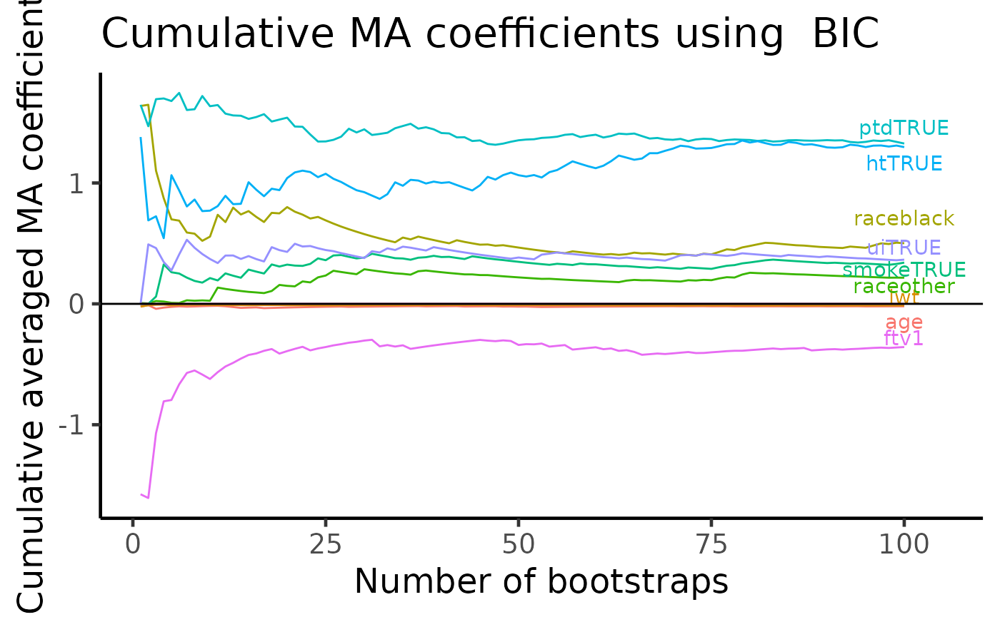

APES: birth weight data example
Kevin Y.X. Wang
School of Mathematics and Statistics, The University of Sydney, AustraliaGarth Tarr
School of Mathematics and Statistics, The University of Sydney, AustraliaJean Y.H. Yang
School of Mathematics and Statistics, The University of Sydney, AustraliaSamuel Mueller
Department of Mathematics and Statistics, Macquarie University, AustraliaSource:
vignettes/birthweight.Rmd
birthweight.RmdIntroduction
In this vignette, we will demonstrate a real application of APES on a logistic regression model. The data we have chosen is the birth weight (birthwt) data from the MASS package. In this data, there are 189 observations and the binary response variable is whether an infant is in the low-weight group (low). There are eight predictor variables in total comprising of two numeric variables (age and lwt) and six others are factor variables.
Loading packages and setting up the data
## ── Attaching packages ─────────────────────────────────────── tidyverse 1.3.0 ──## ✔ ggplot2 3.3.2 ✔ purrr 0.3.4
## ✔ tibble 3.0.4 ✔ dplyr 1.0.2
## ✔ tidyr 1.1.2 ✔ stringr 1.4.0
## ✔ readr 1.4.0 ✔ forcats 0.5.0## ── Conflicts ────────────────────────────────────────── tidyverse_conflicts() ──
## ✖ dplyr::filter() masks stats::filter()
## ✖ dplyr::lag() masks stats::lag()
## ✖ dplyr::select() masks MASS::select()data("birthwt", package = "MASS") theme_set(theme_classic(14) + theme(legend.position = "bottom"))
We will simplify the data using the code below.
bwt <- with(birthwt, { race <- factor(race, labels = c("white", "black", "other")) ptd <- factor(ptl > 0) ftv <- factor(ftv) levels(ftv)[-(1:2)] <- "2+" data.frame(low = factor(low), ## indicator for low-weight group age, ## mother's age in years lwt, ## mother's weight in pounds at last menstrual period race, ## mother's race (white, black, other) smoke = (smoke > 0), ## smoking status during pregnancy ptd, ## indicator for previous premature labours ht = (ht > 0), ## indicator for history of hypertension ui = (ui > 0), ## indicator for uterine irritability ftv ## number of physician visits during the first trimester ) }) glimpse(bwt)
## Rows: 189
## Columns: 9
## $ low <fct> 0, 0, 0, 0, 0, 0, 0, 0, 0, 0, 0, 0, 0, 0, 0, 0, 0, 0, 0, 0, 0, …
## $ age <int> 19, 33, 20, 21, 18, 21, 22, 17, 29, 26, 19, 19, 22, 30, 18, 18,…
## $ lwt <int> 182, 155, 105, 108, 107, 124, 118, 103, 123, 113, 95, 150, 95, …
## $ race <fct> black, other, white, white, white, other, white, other, white, …
## $ smoke <lgl> FALSE, FALSE, TRUE, TRUE, TRUE, FALSE, FALSE, FALSE, TRUE, TRUE…
## $ ptd <fct> FALSE, FALSE, FALSE, FALSE, FALSE, FALSE, FALSE, FALSE, FALSE, …
## $ ht <lgl> FALSE, FALSE, FALSE, FALSE, FALSE, FALSE, FALSE, FALSE, FALSE, …
## $ ui <lgl> TRUE, FALSE, FALSE, TRUE, TRUE, FALSE, FALSE, FALSE, FALSE, FAL…
## $ ftv <fct> 0, 2+, 1, 2+, 0, 0, 1, 1, 1, 0, 0, 1, 0, 2+, 0, 0, 0, 2+, 0, 1,…Single run of APES on birthweight data
We will first fit a “full” logistic regression model utilising all available variables to get a preliminary understanding of the data and the model.
## Estimate Std. Error z value Pr(>|z|)
## (Intercept) 0.823 1.245 0.661 0.508
## age -0.037 0.039 -0.962 0.336
## lwt -0.016 0.007 -2.211 0.027
## raceblack 1.192 0.536 2.225 0.026
## raceother 0.741 0.462 1.604 0.109
## smokeTRUE 0.756 0.425 1.778 0.075
## ptdTRUE 1.344 0.481 2.796 0.005
## htTRUE 1.913 0.721 2.654 0.008
## uiTRUE 0.680 0.464 1.465 0.143
## ftv1 -0.436 0.479 -0.910 0.363
## ftv2+ 0.179 0.456 0.392 0.695While on the outset, many of these variables would have seem to have an impact on the birth weight of an infant, the summary of the logistic model (in particular the p-values) imply that some variables are redundant. So we may wish to perform variable selection on this data using the APES package with the main function being apes.
apes_result = apes(model = full_model) apes_result
## Time taken: 0.0002449671 minutes
##
## APES - AIC selected the following variables
## intercept age lwt raceblack raceother smokeTRUE ptdTRUE htTRUE
## 0.095 0.000 -0.017 1.264 0.864 0.876 1.231 1.767
## uiTRUE ftv1 ftv2+
## 0.000 0.000 0.000
##
## APES - BIC selected the following variables
## intercept age lwt raceblack raceother smokeTRUE ptdTRUE htTRUE
## -1.057 0.000 0.000 0.000 0.000 0.000 1.463 0.000
## uiTRUE ftv1 ftv2+
## 0.000 0.000 0.000The apes_result gives us an indiaction as to which variables are considered to be the most important by the Akaike Information Criterion (AIC) and the Bayesian Information Criterion (BIC) under an approximated exhaustive search. Note that APES handles a factor variable in similar style as other R packages by (alphabetically) selecting a level in the factor as the reference level and compare all other levels against this reference.
Variable selection stability
Suppose we are using the BIC as the main selection criterion, a single application of APES suggests that we should only select the ptd variable. However, previous studies into this data suggested that this data possess several interesting characteristics, one being variable selection instability. This means that the variables we select based on a single application of any model selection method cannot always be reproduced if the data is slightly perturbed. One way we can confirm the existence of this instability is to perform a bootstrap resampling of the observations, this introduces a perturbation on the data which affects model selection.
set.seed(2020) boot_bwt = bwt[sample(1:nrow(bwt), nrow(bwt), replace = TRUE), ] full_model2 = glm(low ~ ., family = binomial, data = boot_bwt) round(summary(full_model2)$coef, 3)
## Estimate Std. Error z value Pr(>|z|)
## (Intercept) 0.382 1.194 0.320 0.749
## age -0.001 0.039 -0.038 0.970
## lwt -0.017 0.007 -2.518 0.012
## raceblack 1.238 0.515 2.404 0.016
## raceother 0.346 0.487 0.711 0.477
## smokeTRUE 0.824 0.433 1.901 0.057
## ptdTRUE 1.097 0.486 2.257 0.024
## htTRUE 1.602 0.832 1.926 0.054
## uiTRUE 0.819 0.483 1.695 0.090
## ftv1 -0.970 0.553 -1.754 0.079
## ftv2+ -0.194 0.458 -0.423 0.672apes(full_model2)
## Time taken: 7.998943e-06 minutes
##
## APES - AIC selected the following variables
## intercept age lwt raceblack raceother smokeTRUE ptdTRUE htTRUE
## 0.614 0.000 -0.018 1.111 0.000 0.681 1.161 1.675
## uiTRUE ftv1 ftv2+
## 0.812 -0.996 0.000
##
## APES - BIC selected the following variables
## intercept age lwt raceblack raceother smokeTRUE ptdTRUE htTRUE
## 0.897 0.000 -0.016 1.054 0.000 0.000 1.423 0.000
## uiTRUE ftv1 ftv2+
## 0.000 -1.315 0.000We can see that when we perturb on the data, the p-value for the ht variable increases from 0.008 to 0.054, which could cause confusion if we take a naive approach to only select variables with p-values < 0.05. Similarly, this perturbation also affects APES, as we have now selected three extra variables under the BIC. Variable selection stability is not a criticism of any specific methods, but rather, it is an issue for data with ambiguous signals. We will describe how the APES package uses bootstrap resampling to improve variable selection stability in the next section.
Bootstrapping with the APES package
One way that we can improve variable selection stability is to apply APES on many bootstrap resampling of the data and then average the computed results. As the main motivation of APES is to make exhaustive selection fast and it is therefore also ideally suited for such a procedure which requires a large amount of computation.
Running the apes function with an extra argument n_boot automatically invokes bootstrapping sampling on the rows of the data. The returned object is a boot_apes class object which stores all bootstrapped apes objects. This class comes with generic print, summary and plot methods, which make the interaction with such an object much easier.
The summary method summarises the averaged selection (empirical) probability of each variable for a given information criterion. In the next section, we will explore the plot generic methods for this object class.
Variable importance plot
The variable importance plot is a technique explored in Murray et. al. (2013) and it shows the stability of each variable as empirical probability of selection against different penalty terms, assuming the a general information criterion formulation $-2 + (p + 1) $, where \(\ell\) is the log-likelihood of a model, \lambda is the penalty term and \(p\) is the number of predictors (excluding the intercept term). The most important difference between this plot method and the summary/method methods is that we are no longer fixated on a single information criterion such as the AIC (where \(\lambda = 2\)) and the BIC (where \(\lambda = \log(p)\)). Instead, we can visualise the selection with ever increasing penalty term \(\lambda\). Variables with stronger selection stability are those with high probabilities of selection with increasingly higher levels of penalisation.
We can see that the variables in order of strength of stability are ptd, ht and lwt.
plot(boot_result, type = "vip")

Tile version of VIP plot
This plot is identical in construction as the VIP plot above. However, the probability of selection is used as colours in a tile plot. The most stably selected variables are on the top of the y-axis.
plot(boot_result, type = "vip_tile")

Model averaged coefficient plot
APES stores all the coefficient estimates in each bootstrap run. We can use this information to compute cumulative averages of variable coefficients. This plot allows us to examine the stability of the model coefficient estimates whereas the previous VIP plots shows only the stability of variable selection.
plot(boot_result, type = "ma")

Information criterion pathway plot
During the bootstrap computations, APES records the best AIC/BIC models across all bootstrap runs. Due to the induced perturbation, the AIC/BIC-best model in each bootstrapped data do not always coincide. One way to examine the differences between these models is to look into the model size of the best selected model.
Here, each bootstrap run is represented by a black curve with the BIC-selected model of each run coloured as red. We can see that it is rare for a model of size 2 to be selected when using the BIC, with the majority of the models being between 3 and 6 in model size. This is a reason why we should perform such a bootstrap procedure to examine the model selection stability as a single run of APES only identifies a model of size two under the BIC selection criterion.
plot(boot_result, type = "path", order = "BIC")

Parallel processing
For large number of bootstrap runs, one might consider using parallel processing to reduce the total computational time. The parallel backend support of APES uses the furrr package. To invoke parallel processing, this requires a single parameter workers.
parallel_result = apes(model = full_model, n_boot = 100, workers = 2) parallel_result
Reference
Mueller, S. and Welsh, A. H. (2010), On model selection curves. International Statistical Review, 78:240-256. doi: 10.1111/j.1751-5823.2010.00108.x
Murray, K., Heritier, S. and Mueller, S. (2013), Graphical tools for model selection in generalized linear models. Statistics in Medicine, 32:4438-4451. doi: 10.1002/sim.5855
Tarr G, Mueller S and Welsh AH (2018). mplot: An R Package for Graphical Model Stability and Variable Selection Procedures. Journal of Statistical Software, 83(9), pp. 1-28. doi: 10.18637/jss.v083.i09
Wang, K. Y., Tarr, G., Yang, J. Y., & Mueller, S. (2019). Fast and approximate exhaustive variable selection for generalised linear models with APES. Australian & New Zealand Journal of Statistics, 61(4), 445–465. https://doi.org/10.1111/anzs.12276
Session Info
## R version 4.0.3 (2020-10-10)
## Platform: x86_64-apple-darwin17.0 (64-bit)
## Running under: macOS Catalina 10.15.7
##
## Matrix products: default
## BLAS: /Library/Frameworks/R.framework/Versions/4.0/Resources/lib/libRblas.dylib
## LAPACK: /Library/Frameworks/R.framework/Versions/4.0/Resources/lib/libRlapack.dylib
##
## locale:
## [1] en_US.UTF-8/en_US.UTF-8/en_US.UTF-8/C/en_US.UTF-8/en_US.UTF-8
##
## attached base packages:
## [1] stats graphics grDevices utils datasets methods base
##
## other attached packages:
## [1] forcats_0.5.0 stringr_1.4.0 dplyr_1.0.2 purrr_0.3.4
## [5] readr_1.4.0 tidyr_1.1.2 tibble_3.0.4 ggplot2_3.3.2
## [9] tidyverse_1.3.0 MASS_7.3-53 APES_0.6.0
##
## loaded via a namespace (and not attached):
## [1] httr_1.4.2 jsonlite_1.7.1 splines_4.0.3 modelr_0.1.8
## [5] gtools_3.8.2 assertthat_0.2.1 blob_1.2.1 cellranger_1.1.0
## [9] yaml_2.2.1 ggrepel_0.8.2 globals_0.13.1 pillar_1.4.6
## [13] backports_1.1.10 lattice_0.20-41 glue_1.4.2 digest_0.6.26
## [17] RColorBrewer_1.1-2 rvest_0.3.6 colorspace_1.4-1 plyr_1.8.6
## [21] htmltools_0.5.0 Matrix_1.2-18 pkgconfig_2.0.3 broom_0.7.2
## [25] listenv_0.8.0 haven_2.3.1 scales_1.1.1 farver_2.0.3
## [29] generics_0.0.2 ellipsis_0.3.1 withr_2.3.0 furrr_0.2.1
## [33] cli_2.1.0 survival_3.2-7 magrittr_1.5 crayon_1.3.4
## [37] readxl_1.3.1 memoise_1.1.0 evaluate_0.14 ps_1.4.0
## [41] fs_1.5.0 future_1.19.1 fansi_0.4.1 xml2_1.3.2
## [45] textshaping_0.1.2 tools_4.0.3 hms_0.5.3 lifecycle_0.2.0
## [49] munsell_0.5.0 reprex_0.3.0 compiler_4.0.3 pkgdown_1.6.1.9000
## [53] systemfonts_0.3.2 rlang_0.4.8 grid_4.0.3 rstudioapi_0.11
## [57] leaps_3.1 labeling_0.4.2 rmarkdown_2.5 gtable_0.3.0
## [61] codetools_0.2-16 DBI_1.1.0 reshape2_1.4.4 R6_2.4.1
## [65] lubridate_1.7.9 knitr_1.30 utf8_1.1.4 rprojroot_1.3-2
## [69] ragg_0.4.0 desc_1.2.0 stringi_1.5.3 parallel_4.0.3
## [73] Rcpp_1.0.5 vctrs_0.3.4 dbplyr_1.4.4 tidyselect_1.1.0
## [77] xfun_0.18